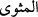

37. Allah kime de hidayet ederse, artık onu saptıracak yoktur. Allah, mutlak güç
sâhibi ve intikam alıcı değil midir?
38. Andolsun ki onlara: Gökleri ve yeri kim yarattı? diye sorsan, elbette
“Allah’tır” derler. De ki: Öyleyse bana söyler misiniz? Allah bana bir zarar
vermek isterse, Allah’ı bırakıp da taptıklarınız, O’nun verdiği zararı giderebilir mi?
Yahut Allah, bana bir rahmet dilerse, onlar O’nun bu rahmetini önleyebilirler mi?
De ki: Bana Allah yeter. Tevekkül edenler, ancak O’na güvenip dayanırlar.
39. De ki: Ey kavmim! Elinizden geleni yapın; doğrusu ben de yapacağım!
Yakında bileceksiniz!
40. Kendisini rezil edecek azap kime gelecek, kime sürekli azap inecek?
41. (Rasûlüm)! Şüphesiz biz bu Kitab’ı sana, insanlar için hak olarak indirdik.
Artık kim doğru yolu seçerse kendi lehinedir; kim de saparsa ancak kendi aleyhine
sapmış olur. Sen onların üzerinde vekil değilsin.
“Allah’a karşı yalan uyduran”dan daha zâlim kimdir?
el-İrşâd’da der ki: “Önceki âyetteki “dâvalaşacaksınız” ifâdesinin ilk mânâsı, bu
âyete daha uygun ve daha açıktır. Çünkü bu âyet, başka bir konuda değil îman ve küfür
hakkında meydana gelen dâvâlaşmanın her iki tarafının durumunu beyân etmek için sevk
edilmiştir.”
Bahru’l-ulûm’da ise şöyle der: “Bu âyette, kıyamet günü olacak dâvalaşmanın
zâlimler ile mazlumlar arasında olacağına açık bir delâlet vardır.
Mânâ ise şöyledir: Allah Teâlâ’ya ortak ve çocuk izâfe etmek sûretiyle O’na iftira
eden kişi bütün zâlimlerden daha zâlimdir.
“Kendisine gelen” yâni Rasûlullah (s.a.)’in lisânıyla geldiği ilk anda, yâni gelir
gelmez, duyduğu ilk anda hiç düşünmeden, ölçüp biçmeden “gerçeği” hakkın ta kendisi
ve bizatihi doğruluk olan şeyi, yâni Hz. Peygamber (s.a.)’in getirdiği dîni/Kur’an’ı
“yalan sayandan daha zâlim kimdir?”
Bu âyette Allah’ın kendisine mertebe, hal ve makam verdiği iddiâsıyla Allah’a karşı
yalan uyduranlara işâret edilmektedir. Böyleleri, sözünde ve hallerinde dosdoğru
konuşan dosdoğru (sıddîk) birini gördüklerinde onu yalanlar, doğruluğunu inkâr ederler.
Bu yüzden kıyamet günü akıbetleri şu âyette dile getirilen duruma müncer olur:
“Kıyamet günü, Allah’a yalan isnâd edenleri, yüzleri kapkara bir vaziyette
göreceksin!” (ez-Zümer, 39/60). İşte bu sebeple Allah Teâlâ şöyle buyuruyor:
“Kâfirlerin yeri cehennemde değil mi?”
Buradaki soru, inkârî bir sorudur. Olumsuzluğun inkâr/reddedilmesi, onun
bulunmadığını gösterir. Olumsuzun olumsuzu ise olumludur.
“
” ikamet etmek ve yerleşmek, “
” mesvâ ise ikamet edilecek, yerleşilecek yer
demektir.